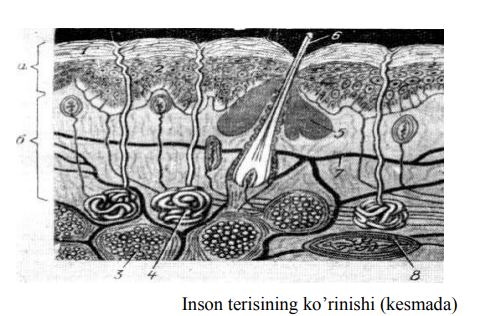
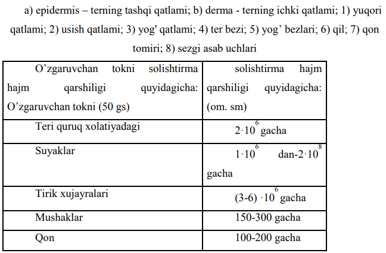
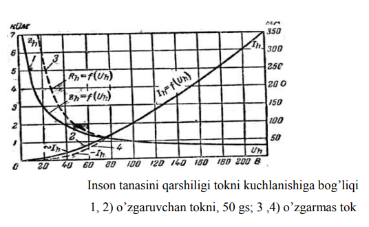

Mavzu:
Yerga ulash qurilmalarini hisoblash. Inson tanasining elektrga
qarshiligini o’lchash
Reja:

Yerga ulash qurilmalari
Yerga ulash (zazemleniye) - elektr apparatlar, mashinalar, jixozlar,
yashin qaytargichlar va bularni yer bilan tutashtirish yerga
ulagichlar vositasida amalga oshiriladi. Yerga ulagich yerga
koʻmiladigan metall (poʻlat, mis) elektrod va qurilmalarning yerga
ulanadigan qismlarini elektrod bilan biriktiradigan oʻtkazgichdan
iborat. Yerga ulanadigan qism bilan yer orasidagi qarshilikni
kamaytirish uchun elektrod sizot suvlari sathi chuqurligida
koʻmiladi. Yerning qarshiligi katta boʻlganda elektrodga namakob
quyiladi. Yerga ulash radioeshittirish tarmoqlarida, radiotexnikada,
simli aloqada (bunda yer oʻtkazgich vazifasini bajaradi), yashin
qaytargich va boshqa apparatlarda (ularni ortiqcha kuchlanishdan
himoya qilish, yaʼni tokni yerga oʻtkazib yuborish uchun)
ishlatiladi. Yerga ulash tashqi maydon taʼsirida hosil boʻladigan
qarshiliklarni kamaytiradi. Kishilarni tok urishidan himoya qilish
uchun kuchlanish ostidagi qurilmalarning tashqi metall qismlari
(mashina, apparat korpuslari va b.) yerga ulanadi.


Inson tanasining elektr tokiga qarshiligi

Inson tanasidan o`tayotgan tok, eng kichik qarshilik ko`rsatadigan
yo`ldan boradi. Shu holatida tanani qismlari har xil solishtirma
qarshiligiga ega bo`lgani bilan tushuntiriladi.

Inson terisi eng katta solishtirma qarshiligiga ega, ayniqsa eng
yuqori qatlami. Inson tanasini qarshiligi ikki yo`nalishidan iborat:
kontakt joyidagi terini qarshiligi va ichki organlarni qarshiligi.
Inson tanasini faol va hajmli yo`nalishlarining qarshiliklari bir
yuz pikofaradan bir necha mikrofaradgacha bo`lishi mumkin. Tok
kuchlanishini oshishi bilan tana qarshiligi kamayib boradi. Natijada
terini yorib o`tadi. Tokni kuchi yoki, o`tish muddati oshishi bilan
teri qizib boradi va tutash joylari terlashiga olib keladi. Shu ham
terini elektr qarshiligini kamaytiradi.
Ichki organlarni qarshiligi asosan tok kuchlanishiga bog`liq va
300-600 om bo`ladi. Inson tanasini umumiy qarshiligi ham tokni
kuchlanishiga bog`liq, lekin chiziqli emas, kuchlanishni ko`payishi
bilan umumiy qarshiligi kamayadi va 300 V kuchlanishida ichki
organlarni qarshiligiga yaqinlashadi.

Shunday qilib, inson tanasini elektr tokiga ko`rsatayotgan
qarshiligi bir tekis va mo`tadil emas. Shu qarshiliklar bilan
hisob-kitob qilishda o`ziga hos qiyinchiliklarga duch kelinadi.
Hisob-kitobni osonlashtirish niyatida da yetarli aniqlik darajasida
inson tanasini qarshiligini Rh = 1000 Om ga teng deb qabul qilingan.

Inson tanasiga elektr tokini ta’siri
Umumiy baxtsiz xodisalar ichida, elektr tokidan jarohatlanish
taxminan 5% tashkil qiladi. Lekin, elektr jarohatlanish ichida og’ir
turli, ayniqsa o’lim bilan tugaydigan xodisalar 70-75% tashkil
qiladi. Elektr xodisalarni asosiy soni, kuchlanishi 1000V gacha
bo’lgan elektr uskunalarga to’g’ri keladi. Buni sababi kuchlanishi
1000V gacha bo’lgan elektr uskunalar keng tarqalgan bo’lib, ularni
ishlatadigan xodimlarni elektr texnikaviy tayyorlanishi past
darajada. Kuchlanish 1000 V dan ortiq bo’lgan elektr jarohatlarni
soni ancha kam, va ularga xizmat qiladigan xodimlar mahsus
o’rgatilgan va tayyorlangan, sababli baxtsiz xodisalar ham deyarli
kam sodir bo’ladi.
Elektr tok ta’siri natijasida inson tanasini shikastlanishi elektr
jarohat deb ataladi. Elektr tokning xatarligi shuki, inson o’z
sezguvchi organlari bilan, kuchlanishni bor-yo’qligini aniqlamaydi.
Odam faqat elektr kuchlanish ostida qolgandan keyin himoyalovchi
reaksiyasi kechikib ishga tushadi.
Insonni elektr tokidan jarohatlanishi sabablari quyidagicha:
izolyasiya qilinmagan tok o’tkazuvchi qismlarga tasodifan tegib
ketishi; izolyasiyasi lat yegan sababi metal qismlarga tokni o’tib
ketishi; kuchlanish ostida qolgan metalmas buyumlardan, qadamli
kuchlanishdan va elektr yoyi orqali. Inson tanasidan o’tayotgan tok:
termik, elektrolitik, biologik ta’sirini va mehanik jarohatlanish
olishi mumkin.
Termik ta’siri - teri to’qimasining
hujayrasini qizishidan kuydirishigacha olib kelishi mumkin.
Elektrolitik ta’siri - organizmning
suyuqliklari parchalanishi natijasida qonning va hujayralarning
kimyoviy va fizik hususiyatlari o’zgarilishi kuzatiladi.
Biologik ta’siri - tanani
bioenergetik jarayonini buzilishi, ya’ni tirik hujayralarni
to’lqinlanishi va mushaklarni keskin qisqarishiga olib keladigan
holat. Elektr tok bilan shikastlanishni ikki turini ko’rsatish
mumkin: elektr jarohat va elektr zarb.
Elektr jarohatlanishi - insonni
tanasini ayrim joylarini shikastlanishi, elektr kuyishi, elektr
belgilari va terini metallanishini ko’rinishlariga ega. Inson
tanasidan tok o’tishi natijasida tanani qizishi - elektr kuyish deb
ataladi. Tanani ichki va tashqi qismi kuyishi mumkin. Jarohat olish
sharoitlariga ko’ra kontakt, yoyi va aralash kuyishlarga ajratiladi.

Inson tanasidan tok o’tishi natijasida tanani elektr kuyishi